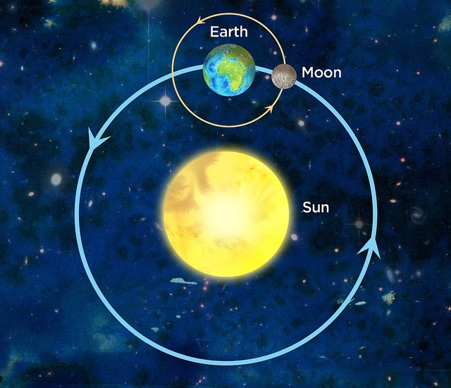

Time Series Analysis
with Convolutional Neural Networks
And how to predict the fate of chaotic systems?
Hierarchical Triple Systems are expensive to simulate
Hierarchical Triple Systems are a special case of the Three Body Problem, where the center
of mass of two bodies orbits a third one. An example could be the Earth-Moon system which
orbits the Sun. Although the Sun-Earth-Moon triple system is very stable because of the
dominant influence of the Sun on the other two bodies, predicting the fate of general
hierarchical triple systems is not an easy task, and typically relies on computationally
expensive and time-consuming numerical simulations.

200 times faster! 🚀
With my colleague Alessandro Alberto Trani
(then postdoc at the University of Tōkyō), I developed a Convolutional Neural Network
to analyze the very beginning of Hierarchical Triple System simulations (that is the first
0.5%), and predict their final state. The model is capable of detecting subtle early
variations in the Kepler orbital elements (e.g. eccentricity, semi-major axis, etc), and
can leverage these characteristics to predict the fate of the system.
Our paper has been published in the Astrophysical Journal.
→ Go check it out be
here (ApJ)
→ And our code is
here (GitLab)